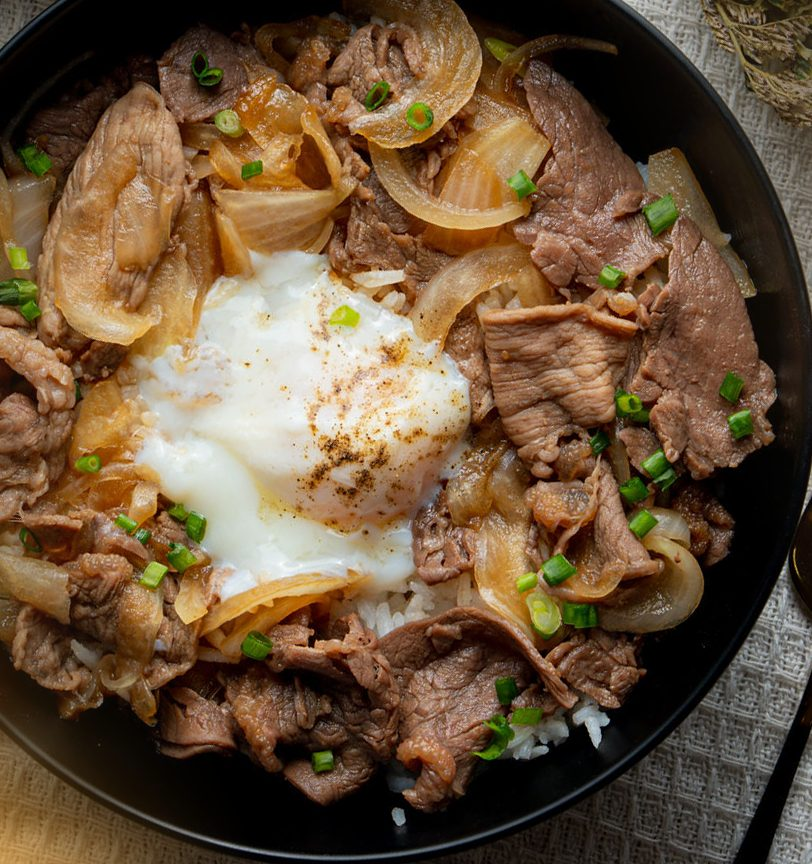
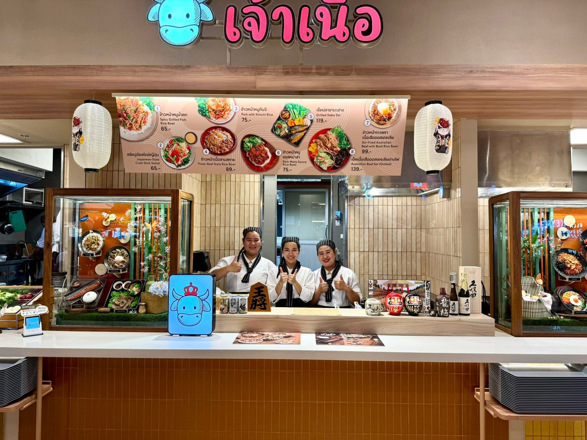
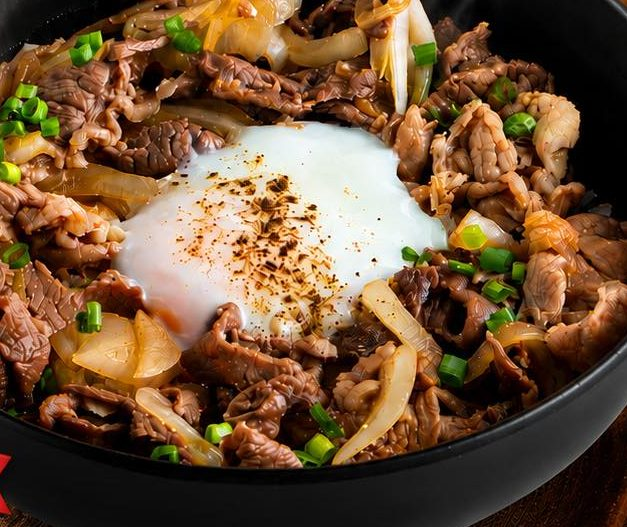
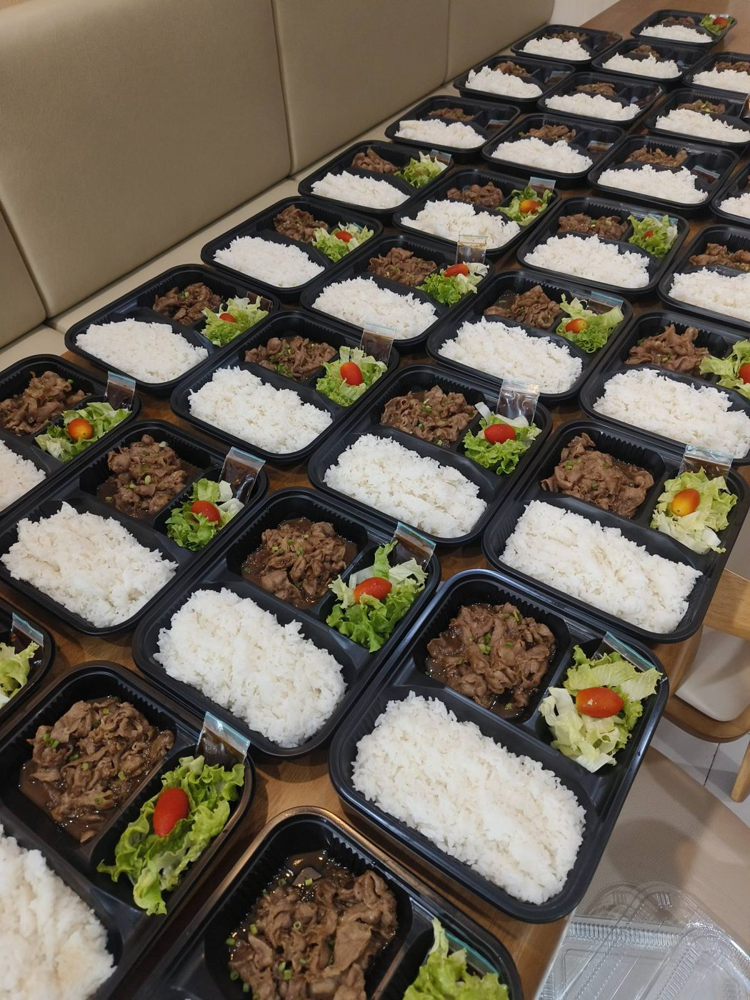
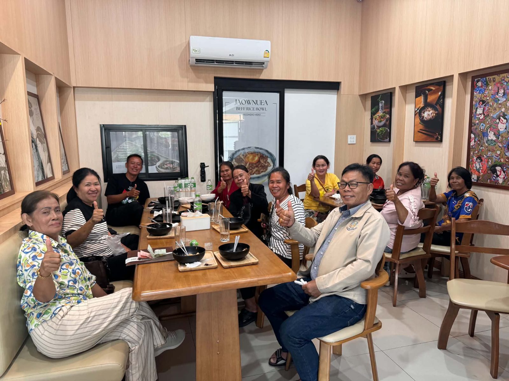
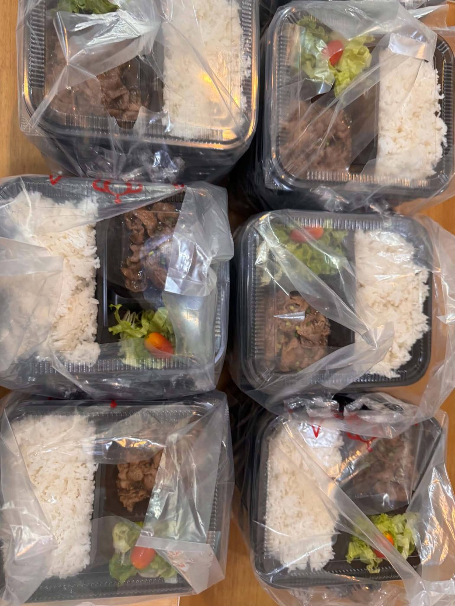
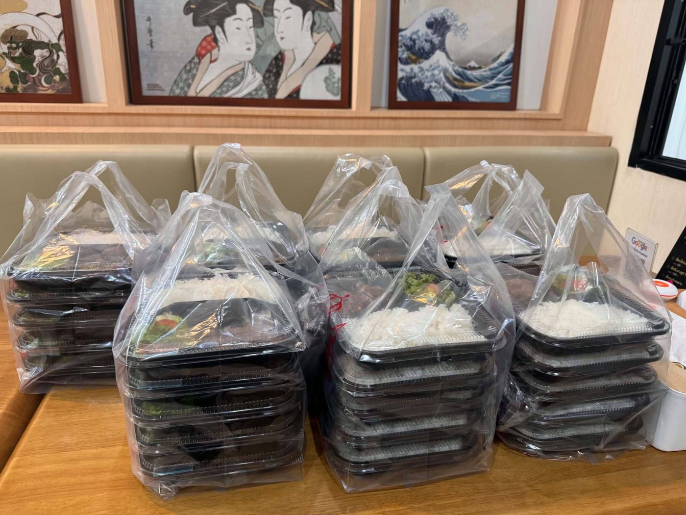

Best seller
Sam Sahai Beef Bowl
ข้าวหน้าเนื้อสามสหาย
Japanese-style rice bowls · Since 2020
เจ้าเนื้อ ข้าวหน้าเนื้อสไตล์ญี่ปุ่น · “ทุกคำ คือความพรีเมี่ยม ข้าวหน้าเนื้อที่ดีที่สุด”
Tender beef and pork, glossy sweet-savoury sauce and hot steamed rice. Jaownuea has been serving Japanese-style rice bowls in Khon Kaen since 2020 — from 59 baht.

About us · เกี่ยวกับเรา
Jaownuea by Araya Food has been cooking Japanese-style rice bowls since 2020, with tender meat, a sweet-savoury house sauce and friendly prices. Today you'll find us in Ban Sri Than and at the Food Patio in Central Khonkaen Campus — plus branches in Udon Thani and Songkhla.
Beyond beef there's grilled pork in Japanese sauce, chicken teriyaki, spicy nam tok and mala bowls, saba fish, fresh Japanese-style salad and a zingy crab-stick yum.



Lunch boxes · รับจัดข้าวกล่อง
We prepare rice-bowl lunch boxes for seminars, meetings, parties and events — choose pork or beef menus, cooked fresh and hot, and delivered anywhere in Khon Kaen. We recently sent 35 boxes of grilled pork in Japanese sauce to Central Khonkaen.
ร้านเจ้าเนื้อรับจัดทำข้าวกล่อง สัมมนา ประชุม งานเลี้ยง อีเวนต์ · มีบริการจัดส่งถึงที่ในเขตขอนแก่น
What guests say
“Tasty beef rice bowl here! Sweet and savoury — gyudon style.”— Google review
“ร้านนี้เคยไปกิน 4–5 รอบแล้ว ติดใจกะเพราวากิวกับข้าวหน้าเนื้อวากิวมาก เนื้อนุ่มนุ่มสุดๆ”— Facebook comment
“อร่อยมาก มากันอีกนะ”— Google review
Gallery



Branches · สาขา
151/61 Ban Sri Than, Soi Maliwan 5, Nai Mueang, Khon Kaen
Tue–Sun 11:00–21:00 · closed Mondays
Food Patio, G floor, Central Khonkaen Campus
Mall opening hours
Kanchanavanich Rd Soi 24, Khao Rup Chang, Songkhla
Visit · การเดินทาง